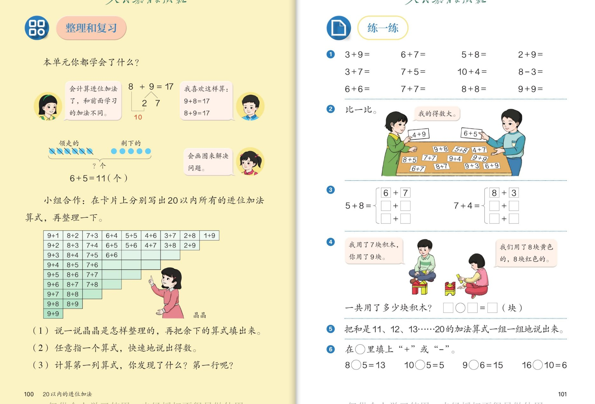
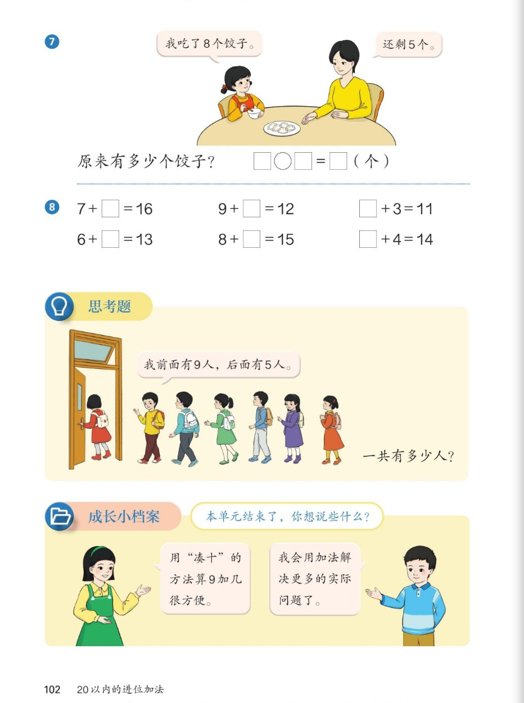

1
🗂️ 整理和复习：算式表里藏着秘密
第100页

▲ 教材第100~101页：整理和复习（算式表）与练一练
认知💬
本单元你都学会了什么？像图上的小朋友一样说一说。
看答案
参考答案：①会算进位加法了，但和前面学的算法不同（要用"凑十"：9＋4，把4分成1和3，9加1得10，10加3得13）；②会画图解决问题：如"领走的＋剩下的"，6＋5＝11（个）；③我喜欢这样算：9＋8＝17，8＋9＝17（交换加数）。🌈说法不唯一，能说出凑十、画图、交换任意一点即可。
认知🧩
晶晶是怎样整理这些算式卡片的？照她的方法把余下的算式填出来。
看答案
参考答案：晶晶按第一个加数分列：第一列都是9加几（9＋1到9＋9），第二列都是8加几（8＋2到8＋9），第三列7加几……一行一行排下去，得数一样的正好排成斜排。余下的照规律填：7＋4、7＋5、7＋6、7＋7、7＋8、6＋5、6＋6、6＋7……（表中已给部分，按"每列第一个加数相同、第二个加数依次多1"填即可。）
强化🔍
（2）（3）任意指一个算式快速说得数。计算第一列算式，你发现了什么？第一行呢？
看答案
参考答案：第一列：都是9加几，得数11、12、13……19，依次大1（因为第二个加数每次多1）。第一行：得数都是10（9＋1、8＋2、7＋3、6＋4、5＋5、4＋6、3＋7、2＋8、1＋9），而且两个加数正好交换位置。💡思考点：竖着看"谁加几"，横着看"凑成几"。
强化🧠
斜着看算式表（如 5＋8、8＋5 这一片），你还能发现什么新规律？
看答案
参考答案：斜着看，得数相同的算式排成一条斜线（如 9＋2、8＋3、7＋4、6＋5、5＋6、4＋7、3＋8、2＋9 得数都是11）。同一条斜线上的算式交换加数成对出现——记住一个就等于记住两个！🌈还可发现：得数越大，斜线上的算式越多。
拓展🔢
数一数：20以内的进位加法算式一共有多少道？你是怎样数的？
看答案
参考答案：按列数：9加几有9道、8加几有8道、7加几有7道……1＋9有1道，9＋8＋7＋…＋1＝45道。也可以按行数：第一行9道、第二行8道……同样45道。💡思考点：两种数法结果一样，互相验证——这就是"有顺序地数"。
拓展🌈
在算式表中挑出你觉得"最容易算错"的3道题，说说容易错在哪，再给同桌提个醒。
看答案
参考答案：🌈说法不唯一。示例：①8＋8——想成8加2得10后忘加剩下的6；②7＋7——容易和6＋7的得数记混；③9＋9——凑十后"10加8"口算慢。提醒：算完用交换加数检查（8＋8交换还是它自己，要背熟）；凑十时"拆几剩几"要念出来再写答案。
2
✏️ 练一练：口算、比一比与积木问题
第101页
认知⚡
第1题口算：3＋9、6＋7、5＋8、2＋9、3＋7、7＋5、10＋4、8－3……哪些题要用凑十？哪些不用？
看答案
参考答案：3＋9＝12、6＋7＝13、5＋8＝13、2＋9＝11、3＋7＝10、7＋5＝12、6＋6＝12、7＋7＝14、8＋8＝16、9＋9＝18——这些要凑十；而 10＋4＝14（直接十加几）和 8－3＝5（减法）不用凑十。💡思考点：先看清"+"还是"－"、有没有满十，再选方法。
强化🧱
第4题积木：我用了7块你用了9块；我们用了8块黄色8块红色。一共用了多少块？怎么列式？
看答案
参考答案：两种角度都能算：7＋9＝16（块）（按两人分），8＋8＝16（块）（按颜色分）。得数相同！和例5一样——分的角度不同，总数不变，两个算式还能互相验算。
强化🃏
第2题比一比："我的得数大！"4＋9 和 6＋5 哪张大？桌上还有哪些卡片可以来比一比？
看答案
参考答案：4＋9＝13，6＋5＝11，13＞11，4＋9的卡片大。桌上任意两张都能比：如 9＋8＝17 最大、6＋7＝13、7＋7＝14……玩法：各抽一张，先算得数再比大小，得数大的赢。🌈比法不唯一。
强化🔁
第3题：5＋8＝13，还能写成□＋□、□＋□；7＋4 也照样子写出两道得数相同的算式。
看答案
参考答案：5＋8＝13：还有 6＋7＝13、9＋4＝13（书上方框示例是6＋7，再任写一道如4＋9）；7＋4＝11：还有 5＋6＝11、8＋3＝11、9＋2＝11。方法：想"和是13（或11）的斜线"，把得数一样的算式一串全找出来。
拓展🧵
第5题：把和是11、12、13……20的加法算式一组一组说出来。和是11的一组你能说全吗？
看答案
参考答案：和是11（进位加法）：9＋2、8＋3、7＋4、6＋5、5＋6、4＋7、3＋8、2＋9 共8道。说的时候按第一个加数从大到小一组一组说，就不重不漏。发现：交换的两个算式成对出现；和越大，这组的算式越多（和是18的有9＋9、8＋10?——进位加法里只有9＋9等，说的时候注意范围）。💡思考点：这就是算式表的"斜线"记忆法。
拓展➕➖
第6题：在○里填"+"或"－"：8○5＝13、10○5＝5、9○6＝15、16○10＝6。怎么判断该填哪个？
看答案
参考答案：8＋5＝13、10－5＝5、9＋6＝15、16－10＝6。判断方法：先看得数和已知数比大小——得数比已知数大，是合起来，填"＋"；得数变小了，是去掉一部分，填"－"。💡思考点：别急着填，先想"整体和部分"的关系。
3
🥟 饺子问题 · 思考题（排队）· 成长小档案
第102页

▲ 教材第102页：饺子问题、填空、思考题（排队）、成长小档案
认知🥟
第7题：我吃了8个饺子，还剩5个。原来有多少个饺子？算式怎么列？
看答案
参考答案：8＋5＝13（个）。想：吃掉的8个是"原来的一部分"，剩下的5个也是一部分，两部分合起来就是原来的。可以画圆片验证：先画8个再画5个，数一数正好13个。和例6"篮球问题"是同一类——求原来，逆向用加法。
强化🧠
第8题填空：7＋□＝16、9＋□＝12、□＋3＝11、6＋□＝13、8＋□＝15、□＋4＝14。怎样想最快？
看答案
参考答案：7＋9＝16、9＋3＝12、8＋3＝11、6＋7＝13、8＋7＝15、10＋4＝14。两种想法：①凑十倒推——想7加几得16（7加3得10，再加6，所以填9）；②部分＋部分＝整体——用整体去掉已知部分。答案可代入原式检查。
强化🔎
对比第8题的两行：□有时在加号前面、有时在后面，位置变了，想法一样吗？
看答案
参考答案：想法一样！□不管在前面还是后面，都是"整体里缺的那一部分"。因为交换加数和不变（□＋3＝11 和 3＋□＝11 完全等价），所以缺几就填几，位置不影响思路。💡思考点：这正是"交换加数"规律的又一次应用。
拓展🚪
思考题：排队进门的小朋友说"我前面有9人，后面有5人"，一共有多少人？
看答案
参考答案：9＋5＋1＝15（人）。别忘了把说话的小朋友自己也算上！可以先画图：○○○○○○○○○（前面9人）＋ 说话的小朋友自己1人 ＋ ○○○○○（后面5人）。验算：9＋1＝10，10＋5＝15。💡思考点：这道题是"三部分合起来"，比之前的两部分题多了一步。
拓展🧍
和之前学过的排队问题比一比："之间有几人""从第10到第15""前面9人后面5人"，这三类题有什么不同？
看答案
参考答案：①"之间"不算两头（15－10－1＝4人）；②"从…到…"两头都算（6人）；③"前面几人后面几人"两头都算、还要加中间说话的人自己（9＋5＋1＝15人）。共同秘诀：画图！画完图一眼看清谁算进去、谁不算。🌈说法不唯一，能画图说明即可。
拓展🌱
成长小档案：本单元结束了，你想说些什么？用一句话夸夸自己学会的本领，再定一个小目标。
看答案
参考答案：🌈说法不唯一。示例：我学会了用"凑十"的方法算9加几很方便（见9想1）；我会用加法解决更多的实际问题了，比如"原来有多少个"。小目标示例：把45道进位加法算得又对又快；学会先画图再解题。💡家长可引导孩子对照"我会算／我会说／我会用"三方面自评。